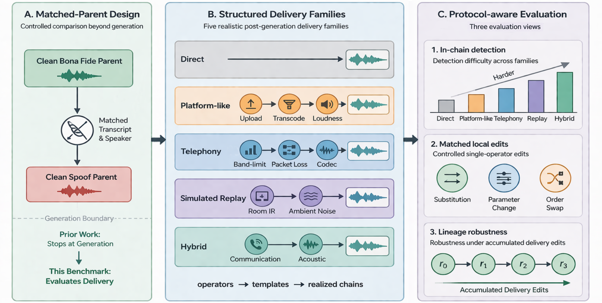

Existing audio deepfake datasets have greatly expanded evaluation across generators, languages, and domains, but most remain generation-centric and provide limited support for studying post-generation delivery. In realistic misuse scenarios, forged audio is often altered by platform re-encoding, telephony transmission, or replay-like recapture before it reaches a listener or an automated system. Recent delivery-related studies usually model such factors as isolated distortions rather than structured, ordered delivery routes, and often lack control over transcript and speaker conditions.
ChainBench-ADD addresses this gap by treating post-generation delivery as a structured benchmark dimension. It models delivery through reusable operators, ordered templates, and realized chains across five delivery families: direct, platform-like, telephony, simulated replay, and hybrid. Each delivered sample remains linked to a clean bona fide or spoof parent under matched-parent control, enabling attribution of detector behavior specifically to delivery rather than to differences in content, speaker, or source quality.

The current release contains 941,201 waveforms derived from 55,813 parents (18,703 bona fide from Common Voice and AISHELL-3; 37,110 spoof from six contemporary TTS systems) across 448 speakers in English and Mandarin Chinese. From the shared metadata, we define five evaluation tasks: in-chain detection, three matched local interventions (operator substitution, parameter perturbation, and order swap), and lineage-based delivery robustness. A leave-one-template-out protocol further tests transfer to unseen templates within a family.
| Operator | Representative Settings | Families |
|---|---|---|
| resample | 16→8, 16→24, 16→8→16, 16→24→16, 16→32→16 kHz | P / T / H |
| band-limit | Narrowband (250–3400 Hz), Wideband (50–7000 Hz) | T / H |
| codec | AAC (24/32/48 kbps), Opus (16/24/32 kbps), GSM, μ-law PCM | P / T / H |
| re-encode | Same/cross-codec AAC/Opus recompression (24/32 kbps) | P / T / H |
| packet loss | 1/3/5/10% loss; burst 2/3/5; repeat-fade, interpolation, or noise-fill | T / H |
| noise | White, pink, brown, babble, hiss, hum; 30/20/15/10 dB SNR | R / H |
| RIR | Small/medium/large rooms; RT60 0.2/0.4/0.6/0.8 s; 0.5/1/2/3 m | R / H |
| call-path | Joint channel filtering, codec, packet loss, jitter (0/8/16 ms), AGC | T / H |
Fam. P = Platform-like, T = Telephony, R = Simulated Replay, H = Hybrid. All operators are waveform-domain transforms, not symbolic tags.
Each card below shows one parent utterance delivered through all five families. Compare how different delivery scenarios alter the same underlying speech.
| Family | Template | Operator Chain | Audio |
|---|---|---|---|
| Direct | direct_clean | identity (no processing) | |
| Platform-like | aac_reencode | codec→re-encode | |
| Telephony | session_nb_mulaw | call-path | |
| Sim. Replay | rir_noise_resample | RIR→noise→resample | |
| Hybrid | reencode_rir_plr | re-encode→RIR→packet loss |
| Family | Template | Operator Chain | Audio |
|---|---|---|---|
| Direct | direct_clean | identity (no processing) | |
| Platform-like | aac_single | codec | |
| Telephony | wb_opus | band-limit→codec | |
| Sim. Replay | noise_rir | noise→RIR | |
| Hybrid | rir_aac | RIR→codec |
| Family | Template | Operator Chain | Audio |
|---|---|---|---|
| Direct | direct_clean | identity (no processing) | |
| Platform-like | aac_single | codec | |
| Telephony | nb_mulaw | band-limit→codec | |
| Sim. Replay | rir_reencode | RIR→re-encode | |
| Hybrid | aac_rir | codec→RIR |
| Family | Template | Operator Chain | Audio |
|---|---|---|---|
| Direct | direct_clean | identity (no processing) | |
| Platform-like | aac_reencode | codec→re-encode | |
| Telephony | nb_mulaw_plr | band-limit→codec→packet loss | |
| Sim. Replay | rir_noise | RIR→noise | |
| Hybrid | bandlimit_codec_rir | band-limit→codec→RIR |
ChainBench-ADD is built from multiple upstream speech resources and TTS systems with heterogeneous license and usage terms. The release distinguishes between assets created by this project (benchmark organization, metadata manifests, split files, delivery templates, operator configurations, scripts, and baseline code) and assets obtained from third-party providers, which remain subject to their original licenses. Users are responsible for complying with the terms of the original providers when obtaining, using, or redistributing upstream dependencies.
The released package includes benchmark audio, metadata manifests, split definitions, construction and rendering scripts, configuration files, and baseline training and evaluation code. The metadata support all benchmark protocols, including parent–child linkage, delivery-family labels, template and variant identifiers, ordered operator signatures, and task-specific grouping information. The repository also provides example commands and instructions for reproducing the benchmark tasks.
ChainBench-ADD is released for research on audio deepfake detection, robustness evaluation, and benchmark construction. It is not released as a voice-cloning service or impersonation toolkit. The intended use is defensive: to study how post-generation delivery affects detector reliability. The project must not be used for impersonation, fraud, harassment, social engineering, or the creation of deceptive media. The release preserves and defers to upstream restrictions where they exist.